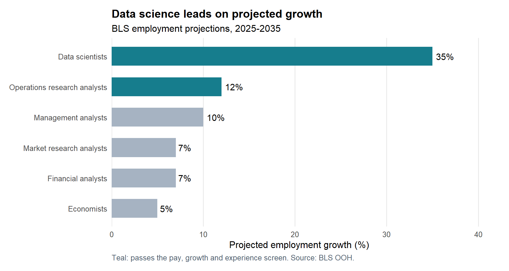
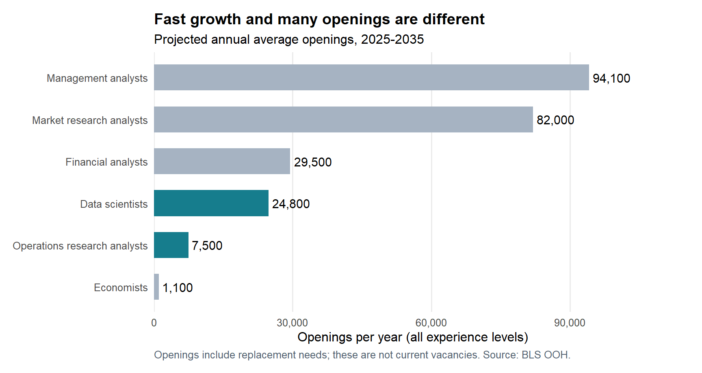

| Occupation | Median annual pay | Growth | Annual openings | Typical education | Related experience |
|---|---|---|---|---|---|
| Management analysts | $101,860 | 10% | 94,100 | Bachelor’s degree | Less than 5 years |
| Market research analysts | $78,760 | 7% | 82,000 | Bachelor’s degree | None |
| Financial analysts | $103,570 | 7% | 29,500 | Bachelor’s degree | None |
| Data scientists | $120,230 | 35% | 24,800 | Bachelor’s degree | None |
| Operations research analysts | $88,940 | 12% | 7,500 | Bachelor’s degree | None |
| Economists | $124,720 | 5% | 1,100 | Master’s degree | None |
Beyond the Economist Job Title: Where Should a Quantitative Student Look?
web scraping
R
labor market
Using rvest and BLS career profiles to turn pay, growth, and opening counts into a practical job-search shortlist.
The question
An economics degree does not require a job with “economist” in its title. For a student with quantitative training, data science, operations research, finance, consulting, and market research are also plausible directions. But searching every category equally takes time. Which paths deserve attention when balancing earnings, growth, and the scale of opportunities?
I compare six deliberately selected occupations in the U.S. Bureau of Labor Statistics’ Occupational Outlook Handbook. These are relevant alternatives, not a representative sample of every graduate career. The aim is to build a practical search shortlist rather than predict an individual’s employment outcome.
From web pages to comparable data
The project uses R’s rvest package to extract each page’s Quick Facts table and the Summary paragraph reporting average annual openings. The archived HTML was captured from the public pages in a browser on September 20, 2026. read_html(), html_elements(), and html_text2() turn those saved pages into structured observations. An optional collection function downloads fresh pages and applies the same extractor.
Cleaning removes excess whitespace, dollar signs, commas, and descriptive text attached to percentages. It keeps annual pay separate from hourly pay and checks for missing fields, duplicate occupations, and inconsistent reference years. The comparison uses May 2025 wages and 2025-2035 projections; retrieval date and measurement year are different concepts.
The pages require no login or paywall. The reviewed robots.txt does not disallow these occupation paths. Collection is limited to six profiles, with pauses between page requests. The refresh function checks current rules, stops on access errors, and never attempts to bypass restrictions. Reusing saved HTML avoids repeat requests during editing.
Growth is not the same as opportunity volume
Data scientists have the fastest projected growth: 35%, compared with 5% for economists. Their median annual pay is $120,230, only $4,490 below economists’ $124,720. For a student interested in both economic questions and computation, this makes data science a compelling direction to investigate.
However, the annual-openings ranking tells a different story. Management analysts have approximately 94,100 openings, market research analysts 82,000, and data scientists 24,800. Economists have 1,100. Data science therefore has about 22.5 times as many projected annual openings as economics, despite a similar median wage.
These measures answer different questions. Growth describes the percentage increase in employment over a decade. Openings include positions arising when workers leave an occupation or retire, as well as expansion. A large, slower-growing occupation can consequently generate more openings than a small, fast-growing one.


Turning the comparison into a search strategy
For a transparent starting rule, I screen for a median wage of at least USD 85,000, projected growth of at least 10%, and no typical requirement for related work experience. These thresholds express a hypothetical student’s preferences; they are not official quality ratings. Data scientists and operations research analysts pass this screen. Operations research offers 12% growth, $88,940 median pay, and approximately 7,500 annual openings.
The recommendation is to make these two categories regular saved searches, while retaining market research and financial analysis as alternatives for applicants whose interests fit them. Management analysis has the most openings, but its typical related-experience requirement means a new graduate should specifically look for entry-level or campus programs. Economics remains attractive for students committed to economic research, but searching only that title would unnecessarily narrow the opportunity set.
The shortlist depends on preferences. Raising the wage threshold to USD 90,000, or the growth threshold to 15%, removes operations research in this snapshot. The code saves a nine-scenario sensitivity table so readers can inspect how changing the rule changes the recommendation.
Limits and takeaway
Median wages cover workers at different career stages; they are not starting salaries. Projected openings are not current vacancies, internships, or evidence of low competition. National averages hide geographic differences, and these profiles cannot establish employer-specific skills, work-authorization eligibility, or an applicant’s probability of receiving an offer. Financial analysts also combine multiple specialties; this comparison consistently uses the combined Quick Facts figures.
The actionable takeaway is to broaden the search beyond “economist,” prioritize data science and operations research under the stated preferences, and evaluate individual postings before applying. Web scraping becomes useful when comparable information changes a decision, with its limitations kept visible.
Sources and reproducibility
Each table entry links to its underlying public BLS profile below. All six snapshots were accessed September 20, 2026. The data, charts, table, sensitivity analysis, and numeric statements above are generated from HTML by R, not pasted from a spreadsheet.
- Data scientists
- Economists
- Operations research analysts
- Market research analysts
- Management analysts
- Financial analysts
In the website project, install the dependencies with source("blog/posts/post2/setup.R"), then render blog/posts/post2/index.qmd. R extracts the archived HTML and regenerates the cleaned data, comparison, sensitivity analysis, and charts inside this post’s data/processed/ and results/ folders. See the accompanying README for replication and optional live collection.
View the complete R scraping code
# Collect structured information from BLS HTML using rvest.
# Run from the project root. Archived HTML makes the default run reproducible.
suppressPackageStartupMessages({
library(rvest)
library(dplyr)
library(stringr)
library(readr)
})
sources <- tibble::tribble(
~id, ~occupation, ~path,
"data-scientists", "Data scientists", "math/data-scientists.htm",
"economists", "Economists", "life-physical-and-social-science/economists.htm",
"operations-research-analysts", "Operations research analysts", "math/operations-research-analysts.htm",
"market-research-analysts", "Market research analysts", "business-and-financial/market-research-analysts.htm",
"management-analysts", "Management analysts", "business-and-financial/management-analysts.htm",
"financial-analysts", "Financial analysts", "business-and-financial/financial-analysts.htm"
) |>
mutate(url = paste0("https://www.bls.gov/ooh/", path))
scrape_profile <- function(file, id, occupation, url) {
page <- read_html(file, encoding = "UTF-8")
rows <- html_elements(page, "#quickfacts tbody tr")
if (length(rows) != 7L) stop("Quick Facts structure changed: ", file)
fields <- tibble::tibble(
label = str_squish(html_text2(html_element(rows, "th"))),
value = str_squish(html_text2(html_element(rows, "td")))
)
get_field <- function(pattern) {
value <- fields$value[str_detect(fields$label, regex(pattern, ignore_case = TRUE))]
if (length(value) != 1L || is.na(value) || value == "") {
stop("Missing or ambiguous field: ", pattern, " in ", file)
}
value
}
# Scope to the Summary article, so the same sentence elsewhere is not counted twice.
summary <- html_element(page, "article[aria-labelledby='Summary']")
if (is.na(html_name(summary))) stop("Summary article missing: ", file)
body <- str_squish(html_text2(summary))
openings <- str_match(body, "About\\s+([0-9,]+)\\s+openings")[, 2]
period <- str_match(body, "from\\s+(20[0-9]{2})\\s+to\\s+(20[0-9]{2})")
pay_label <- fields$label[str_detect(fields$label, "Median Pay")]
pay_text <- get_field("Median Pay")
result <- tibble::tibble(
id, occupation, source_url = url,
# Annual pay is the FIRST amount; the hourly amount is deliberately excluded.
median_pay_usd = parse_number(pay_text),
pay_year = as.integer(str_extract(pay_label, "20[0-9]{2}")),
education = get_field("Entry-Level Education"),
experience = get_field("Work Experience"),
employment = parse_number(get_field("Number of Jobs")),
growth_pct = parse_number(get_field("Job Outlook")),
net_new_jobs = parse_number(get_field("Employment Change")),
annual_openings = parse_number(openings),
projection_start = as.integer(period[, 2]),
projection_end = as.integer(period[, 3])
)
if (anyNA(result)) stop("A required field could not be parsed: ", file)
result
}
collect_data <- function(raw_dir = "data/raw") {
manifest <- read_csv(file.path(raw_dir, "manifest.csv"), show_col_types = FALSE)
if (anyDuplicated(manifest$id) || !setequal(manifest$id, sources$id)) {
stop("Manifest must contain exactly one record for each source.")
}
data <- bind_rows(lapply(seq_len(nrow(sources)), function(i) {
s <- sources[i, ]
scrape_profile(file.path(raw_dir, paste0(s$id, ".html")),
s$id, s$occupation, s$url)
})) |>
left_join(select(manifest, id, access_date, capture_method), by = "id")
stopifnot(nrow(data) == 6L, !anyDuplicated(data$id), !anyNA(data),
all(data$median_pay_usd > 0), all(data$annual_openings > 0),
all(data$employment > 0), all(data$projection_end > data$projection_start),
length(unique(data$pay_year)) == 1L,
length(unique(data$projection_start)) == 1L,
length(unique(data$projection_end)) == 1L)
# All monetary figures must refer to the same year for meaningful comparisons.
dir.create("data/processed", recursive = TRUE, showWarnings = FALSE)
write_csv(data, "data/processed/careers.csv")
data
}
# OPTIONAL live collection. The supplied report uses the archived September 2026
# snapshot. New data go to a separate directory, preserving that original evidence.
refresh_sources <- function(destination = "data/live") {
if (!requireNamespace("httr2", quietly = TRUE)) stop("Install httr2 first.")
if (dir.exists(destination)) stop("Use a new destination to preserve earlier data.")
ua <- "EconomicsCourseProject/1.0 (six public BLS career pages; educational use)"
get_public <- function(url) {
httr2::request(url) |>
httr2::req_user_agent(ua) |>
httr2::req_timeout(30) |>
httr2::req_perform() # Stops on HTTP errors, including 403 and 429. No retries.
}
robots <- httr2::resp_body_string(get_public("https://www.bls.gov/robots.txt"))
if (!grepl("User-agent:", robots, ignore.case = TRUE)) stop("Cannot verify robots.txt.")
# Conservative check: honor Disallow rules from ALL groups, ignore Allow
# exceptions, and stop if any rule could exclude one of these six paths.
# This intentionally may refuse more than necessary; it never tries to evade a rule.
lines <- trimws(gsub("#.*$", "", strsplit(robots, "\n", fixed = TRUE)[[1]]))
rules <- trimws(sub("^[Dd]isallow\\s*:", "", lines[grepl("^[Dd]isallow\\s*:", lines)]))
rules <- rules[nzchar(rules)]
url_paths <- sub("https://www.bls.gov", "", sources$url, fixed = TRUE)
for (rule in rules) {
# Convert robots wildcards to a regular expression. Unanchored rules
# match prefixes; a terminal $ requires a match through the end of a path.
pattern <- glob2rx(sub("\\$$", "", rule), trim.head = FALSE, trim.tail = FALSE)
if (!endsWith(rule, "$")) pattern <- sub("\\$$", "", pattern)
if (any(grepl(pattern, url_paths))) {
stop("A robots.txt rule may disallow these pages: ", rule,
". Stop and review the site's policy; do not bypass it.")
}
}
delay <- 3
crawl <- lines[grepl("^Crawl-delay:", lines, ignore.case = TRUE)]
if (length(crawl)) delay <- max(delay, parse_number(crawl), na.rm = TRUE)
dir.create(destination, recursive = TRUE)
writeLines(robots, file.path(destination, "robots.txt"))
manifest <- list()
for (i in seq_len(nrow(sources))) {
Sys.sleep(delay)
s <- sources[i, ]
response <- get_public(s$url)
content <- httr2::resp_body_raw(response)
file <- file.path(destination, paste0(s$id, ".html"))
writeBin(content, file)
# rvest collects and validates the relevant fields immediately after download.
scrape_profile(file, s$id, s$occupation, s$url)
manifest[[i]] <- tibble::tibble(id = s$id, source_url = s$url,
access_date = as.character(Sys.Date()), capture_method = "HTTP download; rvest extraction")
write_csv(bind_rows(manifest), file.path(destination, "manifest.csv"))
}
message("Saved six pages. Run run_project(raw_dir = '", destination, "') to analyze them.")
invisible(destination)
}View the complete R analysis code
suppressPackageStartupMessages(library(ggplot2))
analyze_careers <- function(careers) {
dir.create("results", showWarnings = FALSE)
data <- careers |>
mutate(
# These thresholds are an explicit preference scenario, not BLS standards.
priority_screen = median_pay_usd >= 85000 & growth_pct >= 10 & experience == "None",
openings_per_100_jobs = 100 * annual_openings / employment
)
write_csv(data, "results/career_comparison.csv")
# Sensitivity analysis prevents treating arbitrary thresholds as universal.
scenarios <- expand.grid(pay_floor = c(80000, 85000, 90000),
growth_floor = c(8, 10, 15))
sensitivity <- bind_rows(lapply(seq_len(nrow(scenarios)), function(i) {
s <- scenarios[i, ]
selected <- data |>
filter(median_pay_usd >= s$pay_floor, growth_pct >= s$growth_floor,
experience == "None")
tibble::tibble(pay_floor = s$pay_floor, growth_floor = s$growth_floor,
qualifying_paths = if (nrow(selected)) paste(selected$occupation, collapse = "; ") else "None")
}))
write_csv(sensitivity, "results/sensitivity.csv")
year <- unique(data$pay_year)
period <- paste0(unique(data$projection_start), "-", unique(data$projection_end))
palette <- c("FALSE" = "#A6B3C2", "TRUE" = "#167D8D")
chart_theme <- theme_minimal(base_size = 12) +
theme(panel.grid.major.y = element_blank(), panel.grid.minor = element_blank(),
legend.position = "none", plot.title = element_text(face = "bold"),
plot.caption = element_text(hjust = 0, color = "#526170"),
plot.margin = margin(12, 28, 12, 12))
p1 <- ggplot(data, aes(x = reorder(occupation, growth_pct), y = growth_pct,
fill = priority_screen)) +
geom_col(width = 0.62) +
geom_text(aes(label = paste0(growth_pct, "%")), hjust = -0.2, size = 4) +
coord_flip() + scale_fill_manual(values = palette) +
scale_y_continuous(expand = expansion(mult = c(0, .17))) + chart_theme +
labs(title = "Data science leads on projected growth",
subtitle = paste("BLS employment projections,", period),
x = NULL, y = "Projected employment growth (%)",
caption = "Teal: passes the pay, growth and experience screen. Source: BLS OOH.")
p2 <- ggplot(data, aes(x = reorder(occupation, annual_openings), y = annual_openings,
fill = priority_screen)) +
geom_col(width = 0.62) +
geom_text(aes(label = scales::comma(annual_openings)), hjust = -0.1, size = 4) +
coord_flip() + scale_fill_manual(values = palette) +
scale_y_continuous(labels = scales::label_comma(), expand = expansion(mult = c(0, .19))) +
chart_theme + labs(title = "Fast growth and many openings are different",
subtitle = paste("Projected annual average openings,", period),
x = NULL, y = "Openings per year (all experience levels)",
caption = "Openings include replacement needs; these are not current vacancies. Source: BLS OOH.")
ggsave("results/growth.png", p1, width = 9, height = 4.8, dpi = 180, bg = "white")
ggsave("results/openings.png", p2, width = 9, height = 4.8, dpi = 180, bg = "white")
capture.output(sessionInfo(), file = "results/sessionInfo.txt")
list(data = data, sensitivity = sensitivity, growth_plot = p1, openings_plot = p2)
}